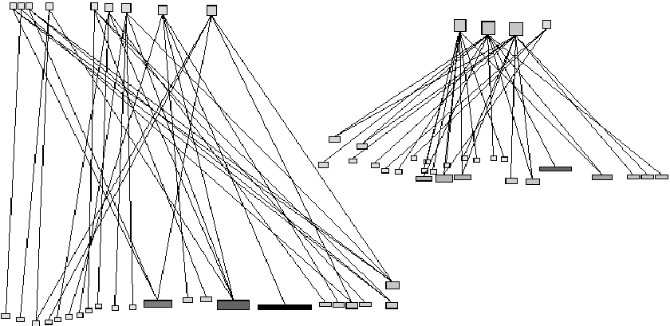
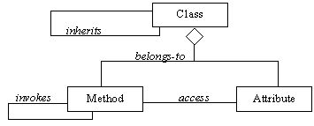
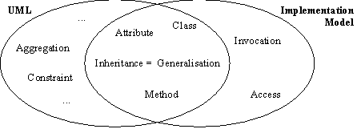
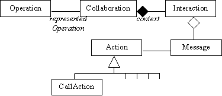

UML Shortcomings for Coping with Round-trip Engineering
Serge Demeyer, Stéphane Ducasse, Sander Tichelaar Software Composition Group, University of Berne Neubrückstrasse 10, CH-3012 BERNE {demeyer,ducasse,tichel}@iam.unibe.ch --- http://www.iam.unibe.ch/~scg/
[Note that this report will appear in the UML'99 Conference Proceedings, published by Springer-Verlag in the LNCS series.]
Abstract:UML is currently embraced as 'the' standard in object-oriented modeling languages, the recent work of OMG on the Meta Object Facility (MOF) being the most noteworthy example. We welcome these standardisation efforts, yet warn against the tendency to use UML as the panacea for all exchange standards. In particular, we argue that UML is not sufficient to serve as a tool-interoperability standard for integrating round-trip engineering tools, because one is forced to rely on UML's built-in extension mechanisms to adequately model the reality in source-code. Consequently, we propose an alternative meta-model (named FAMIX), which serves as the tool interoperability standard within the FAMOOS project and which includes a number of constructive suggestions that we hope will influence future releases of the UML and MOF standards. meta model, unified modeling language (UML), meta-object facility (MOF), interoperability standard, famoos information exchange (FAMIX)
With the advent of UML, the progress in CASE technology has reached a next stage of maturity. Indeed, the consensus on a common notation helps both tool vendors and program designers to concentrate on more relevant issues than the direction in which arrows should be drawn, or the question whether to represent classes as rectangles or clouds.
One of these more relevant issues is the notion of round-trip engineering: the seamless integration between design diagrams and source code, between modeling and implementation. With round-trip engineering a programmer generates code from a design diagram, changes that code in a separate development environment and recreates the adapted design diagram back from the source code. The object-oriented development processes with their emphasis on iterative development (see [Booc94a], [Gold95a], [Reen96a], [Jaco97a], [Jaco99a]) undoubtedly make round-trip engineering a relevant issue.
A second related issue that has become quite relevant is the one of tool interoperability. While many of the early CASE tools tried to cover the whole development process, practice has shown that such a generic approach has trouble competing with a series of individual specialised tools. Consequently, CASE tools are becoming more and more open, permitting developers to assemble their favourite development environment from different tools purchased from different vendors yet co-operating via a single interoperability standard.
The OMG has anticipated this tool interoperability evolution by encouraging and adopting the Meta Object Facility (MOF) as a standard. The goal of the MOF is "to provide the specification of a rich semantics to enable two systems or applications to meaningfully share information. This goal is achievable by providing domain specific metamodels (such as the OOAD metamodel - UML) that conform to the MOF metamodeling architecture." ([MOF97a] - section 1.1.1.1 - Goals and Objectives).
In its current form, the MOF is primarily intended to serve as an exchange standard between OOAD tools. Consequently, the first concrete exchange standard that has been specified using the MOF concerns exchange of UML models. Yet, the increasing demand for round-trip engineering features in OOAD tools will cause tool vendors to use the built-in extension mechanism of UML to cope with more implementation oriented data exchange.
This report argues that UML in stricto sensu is not sufficient as a tool-interoperability standard for integrating round-trip engineering tools. Indeed, since UML is specifically targeted towards OOAD, it lacks some concepts that are necessary in order to adequately model source-code, in particular the concept of a 'method invocation' and an 'attribute access'. Of course it is possible to extend UML to incorporate these concepts, but then the protection of the standard is abandoned and with that the reliability necessary to achieve true interoperability.
We start this report with the requirement extraction concerning round-trip engineering tools using a well-known technique of a scenario (section 2). Afterwards we proceed with an investigation of how to satisfy these requirements using extensions of the UML meta model (section 3). In the section thereafter, we argue that UML extensions cannot achieve tool interoperability (section 4) and consequently propose an alternative meta-model named FAMIX and relate that to the MOF (section 5). Finally, we summarise the results of this work in the conclusions (section 6).
Since we claim that UML is not sufficient to serve as a tool-interoperability standard for integrating round-trip engineering tools, it is necessary to be precise about what exactly is a round-trip engineering tool and what kind of requirements it imposes on an interoperability standard. As commonly accepted in today's analysis practices, we define a round-trip engineering tool and its requirements by means of a scenario.
The driving force underlying the scenario is the observation that round-trip engineering tools should at least support a smooth transition between implementation and design. Thus, it is not that we neglect analysis; it is just that most tools on the market cover design and implementation. Note as well that at first glance the scenario may seem a bit naive to serve in practice. Yet we have successfully applied the described tool prototypes on a number of industrial case studies(1). As such we assure that the scenario is both characteristic for what practitioners expect from round-trip engineering tools and realistic in the sense that it is applicable in the context of industrial development processes.
Carmen is part of a team developing a Geographical Information System called GEOS. The kind of functionality required in GEOS is quite domain specific, so the project adopted an iterative development style with C++ as the implementation language. The development of GEOS started some eight years ago and the system is currently in its 3.7.1 release. Lately, developers have been complaining that it becomes difficult to add functionality.
Carmen is asked to do some code reviewing to see if it is possible to improve the GEOS class structure. Unfortunately, the source code has grown quite large (± 1 million lines of code - 2837 classes) and Carmen would like some tool support to help her identifying potential design anomalies. Therefore, she selects a metrics tool that allows her to measure various aspects of classes (size, inheritance, cohesion, ,...) and focus her attention on those classes where the measurements exceed certain threshold values.
Character. Carmen is the code reviewer of the team. Like all good code reviewers she relies mainly on reading the code to form her opinion. Yet, she appreciates all tools that help her filtering out potential problems.
Goal(s) of this Scene. This scene introduces a metric tool as one possible element of a round-trip engineering environment. The tool depicted in this scene fits the definition of a round-trip engineering tool because the metrics are interpreted on the design level yet are collected from the implementation. Such metric tools are very important in an iterative development process, because they help to control and steer this process. (See [Lore94a] for a practical treatment on how to incorporate object-oriented metrics in a development process and [Hend96a] for an overview of the state-of-the-art in object-oriented metrics.)
Data Model Requirements. Metric tools need to access the complete source code model, as they must collect data about the whole system. As such, the schema of the model must take special precautions concerning the memory footprint of the entities and especially the associations in the source code model, as the sheer number of them may be very large.(2)
To measure object-oriented source code, a metrics tool requires knowledge about inheritance associations between classes and the containment associations between classes, methods and attributes. Moreover, for some of the size metrics and all of the cohesion metrics, a tool requires knowledge about method invocations and attribute accesses.
Carmen has identified one suspicious class which appears quite big, yet has very low cohesion and a large number of subclasses. Moreover, the class is a core part of GEOS as it is part of a bridge pattern that is used to make the GEOS objects persistent. She believes that this class has too many responsibilities and she wants to check whether it is possible to split the class in two separate classes. She assumes that distributing the responsibilities over two smaller classes will make subclassing easier and thus improve the inheritance hierarchy of the GEOS system.
To check whether the class can indeed be split, Carmen applies a special visualisation tool. The tool displays a graph containing attributes and methods as nodes plus attribute accesses and method invocations as edges. The tool has the special feature to incorporate a graph layout heuristic that minimises the number of crossings between edges (See Figure 1). With such a visualisation, Carmen observes two clusters in the methods and attributes and concludes that the class may indeed be split.

Character. Being a good code reviewer, Carmen never relies on a single tool to help her assess the quality of the code. Rather, she has a whole suite of complementary tools that she applies when the situation calls for it.
Goal(s) of this Scene. This scene has two main purposes. First, it introduces another round-trip engineering tool, namely program visualisation. Visualising a program is often interesting because it allows the human brain to study multiple aspects of a complex structure in parallel and as such can be of great help in program understanding. Consequently, a program visualisation tool like depicted in this scene is a round-trip engineering tool because its output is interpreted at design level, yet it takes its input from the implementation (see [Pauw93a], [Lang95a], [Deme99c] for examples of program visualisation in reverse engineering in an object-oriented context).
Second, and more importantly, this scene emphasises the need for various highly specialised tools within round-trip engineering. Because of this variety and specialisation, it is unlikely that all these tools will be purchased from the same tool vendor, hence the need for tool interoperability.
Data Model Requirements. Program visualisation tools are examples of the need for designated access to portions of the source code model. Flexible integration with the data model is crucial, as such a tool wants to visualise any kind of dependency that is present in the source code and needs to customise the lay-out depending on the type of dependency. Memory footprint is less an issue as only slices of the source code must be visualised. Therefore, program visualisation tools want to stay relatively close to a standard model, yet require minor extensions to represent additional information concerning the type of dependency.
Program visualisation tools mainly serve to analyse dependencies between various parts of the implementation in order to obtain a better understanding of the inner workings of a system. Within object-oriented systems, dependencies stem from inheritance associations between classes; containment associations between classes, methods and attributes; invocation associations between methods; and access associations between methods and attributes.
Now that Carmen has identified a class that may be split to improve the class hierarchy of the GEOS system, she contacts Benedikt to explain him what she has discovered. After a short discussion, Benedikt is convinced of Carmen's proposal and he agrees to restructure the class hierarchy accordingly.
To split the class, Benedikt uses his favourite coding tool which is able to apply a series of low-level refactorings (such as create new class, move attribute, move method) to accomplish the desired redistribution of responsibilities. Afterwards, Benedikt runs a series of regression tests to see whether the split of the class did not affect the working system.
Character. Benedikt enters the scenario, playing the role of the code warrior. Since Benedikt is working with code daily, he uses sophisticated development tools (testing, refactoring, browsers) to make him highly productive.
Goal(s) of this Scene. In this scene, we illustrate the notion of refactoring. A single refactoring corresponds to a low-level semantic preserving restructuring, for instance moving an attribute inside the class hierarchy after checking all its references, or for instance renaming a method and patching all places where it is invoked. The idea is to combine several low-level refactorings to improve the design of a class hierarchy, thus refactorings fit our definition of a round-trip engineering. (See the Ph.D. work of Opdyke for the early definitions of refactoring [Opdy92b] and [Robe97a] for a description of a full-fledged refactoring tool. Refactorings are applicable in practice, as is illustrated by [Fowl99a]).
Data Model Requirements. A refactoring tool is an example of a tool that modifies the source code, thus should know about the exact source code location of data model entities. Since such a tool must update the corresponding data model items without breaking any other tool relying on it, refactoring tools want to stay as close as possible to a standard model of the source code.
To apply refactorings --be it manually or with a tool-- it is necessary to check given preconditions and often patch existing references. For instance, before moving an attribute, one must check where this attribute is accessed. Or while renaming a method, one must patch all places where it is invoked. Thus any tool that supports refactorings must at least know about which methods invoke which other ones and which methods access which attributes.
Accepting the above scenario (sections 2.1 to 2.3) has some important consequences concerning what to expect from a round-trip engineering tool.

Figure 2: The Core Object-Oriented Implementation Model
Given the core object-oriented implementation model depicted in Figure 2, the question is whether this can be embedded into UML. Comparing the core implementation model with the UML meta model [UML97a], [UML97b] we make the following observations (summarised in Figure 3).

Figure 3: Comparing the UML meta model with the Core Object-Oriented Implementation Model
Given observations (a) and (b), it should be possible to embed the core implementation model within the UML meta model, if only we find a solution for observation (c). That is, we must find a way to represent the concepts of a method invocation and an attribute access in UML. In the following subsections we will analyse some possibilities to extend the UML meta model to incorporate these two concepts.
There are a number of UML concepts in the Behavioural Elements package (see [UML97b], part 3) that come close to the 'Invocation' and 'Access' concepts of the implementation model (see Figure 2). It is out of the scope of this report to describe all possibilities in detail, so we restrict ourselves to an analysis of the most plausible concept, namely 'Action'. This concept is characteristic for other suitable behavioural elements like 'Message', 'MessageInstance', and 'AttributeLink'.
Most notably, the class 'Action' has one subclass that is attractive for our purposes, namely 'CallAction'. Checking the UML semantics, we read that "an action is a specification of an executable statement (...), realised by sending a message to an object or modifying a value of an attribute" ([UML97b], p. 68). And then "a call action is an action resulting in an invocation of an operation on an instance" ([UML97b], p. 68). Knowing that an attribute access can always be mimicked by an invocation of some special purpose accessor method, a 'CallAction' seems a suitable candidate for modeling the implementation concepts 'Invocation' and 'Access'. So lets examine these a bit further to see whether it fulfils our requirements, in particular how to retrieve both origin and target of an invocation and an access.

Figure 4: CallAction and how to navigate back to its origin
First, to retrieve the possible targets of an instance of 'CallAction', we must interpret the 'target' attribute of the action which, citing the UML semantics "resolves into zero or more specific Instances which are the intended recipients of the dispatched Request" ([UML97b], 8.2 Abstract Syntax / Action - p. 68). Second, to retrieve the origin of an instance of 'CallAction', we must -as is depicted in Figure 4- navigate from an 'Action' over a 'Message', over an 'Interaction', over a 'Collaboration' to finally arrive at the originating 'Operation' ([UML97b], Figure 15: Collaborations). Note that, "in a collaboration it is specified what properties instances should have" ([UML97b], 9.4 Semantics / Collaboration - p. 86), thus the operation retrieved that way is associated with an 'Instance' as well. Therefore, we infer that the 'CallAction' is representing a dynamic association between instances, not a static association between methods.
Consequently, choosing 'CallAction' as a representation for the implementation concepts 'Invocation' and 'Access' has the following implications.
Another possibility for embedding the 'Invocation' and 'Access' concepts of the implementation model (see Figure 2) in UML is to use stereotypes to extend an existing UML concept. The concept of 'Association' is particularly interesting for our purpose, because it declares the presence of a relationship between classes and as such may serve to represent the static relationships between items contained in that class.
Stereotyping an Association to represent an invocation or access mainly involves the specification of a number of tags that are automatically attached to instances of the stereotyped association. These tags will then maintain (a) a reference to the location in source code, (b) the name of the actual method that is initiating the invocation or access (c) the name of the actual attribute being accessed or (d) the name of the actual method being invoked plus the arguments that are passed, plus all that is necessary to deal with polymorphism.
Consequently, using a stereotyped association to represent associations and accesses has the following implications.
The final possibility presented in this report is the usage of the meta meta model underneath UML to add the special purpose 'Invocation' and 'Access' concepts to the meta model (see [UML97b] Table 1: Four Layer Metamodeling Architecture).
As mentioned in the UML standard "This capability depends on unique features of certain UML-compatible modeling tools, or direct use of a meta-metamodel facility, such as the CORBA Meta Object Facility." ([UML97b], p. 51). Although the operation in itself is not so difficult --it boils down to the definition of two classes with all the necessary attributes to hold whatever is required, much in the same way as with stereotypes-- the fact that not all tools will be able to deal with the extension is a major obstacle.
Thus, using the special purpose extensions has the following implications.
The solutions described in sections 3.1 to 3.3 are probably not the only possibilities to embed the concepts of an 'Invocation' or an 'Access' into the UML meta model. However, they are characteristic for the kind of solutions we may expect when round-trip engineering tools choose UML for their underlying representation. Hence, from these three solutions we can derive some important implications.
Let us now revise our round-trip engineering scenario (sections 2.1 to 2.3) from a tool oriented perspective, assuming that each of the three tools are supplied by different vendors. Moreover, let us assume that each tool retrieves and stores its knowledge about the software system using a common repository. Finally, let us assume that this repository has an API that is specified according to the MOF standard, thus uses the CORBA/IDL description of the UML meta model.
As you remember, Carmen first applies the metrics tool to measure various aspects of the classes in the GEOS system and identify suspicious classes. This metrics tool makes use of the repository's API to enumerate all classes, methods and attributes and calculate the corresponding measurements. However, to compute the coupling and cohesion metrics the tool needs to know about the (method) invocations and (attribute) accesses, and these cannot be supplied by the repository. Therefore, the tool instructs a special purpose propriety utility to parse the method bodies and return the required invocations and accesses. Of course the tool wants to save this information for later use, hence uses the "The Special Purpose Extension Approach" (section 3.3) to store this into the repository. The choice of the extension mechanism is best suited for a metrics tool because it needs to construct all invocation and access associations that occur in the system, hence need a representation that has very little memory overhead.
Next, Carmen visualises the access patterns between methods and attributes to check whether the class can be split. The visualisation tool retrieves the necessary methods and attributes from the repository, but the attribute accesses are obtained via a propriety utility that parses method bodies on the fly. Again, the tool wants to save this extra information into the repository. However, this time the "The Stereotyped Association Approach" (section 3.2) is best suited, because it stays quite close to the standard yet allows to represent additional information concerning the type of dependency.
Then, Benedikt splits the class with his refactoring tool. Retrieving the methods and attributes of the class to be split is of course done via the repository. But then a third special purpose propriety utility is necessary to collect the invocations and accesses from the source code. Here as well, the refactoring tool will save this extra information in the repository. However, since the refactorings modify the internal UML model, a refactoring tool favours a model that is as close as possible to the UML standard, hence uses the "The Behavioural Elements Approach" (section 3.1). Unfortunately, after the class has been split, the refactoring tool cannot instruct the repository how to update the extra information that is stored there by the metrics and visualisation tool, due to the fact that these are non-standard UML extensions. Thus, the repository is now in an inconsistent state and Carmen cannot trust that her tools will function properly.
The revision of the scenario from a tool-oriented perspective reveals why the UML meta model is not sufficient to serve as an interoperability standard between round-trip engineering tools. To summarise, the fact that UML lacks the concepts of an 'Invocation' and an 'Access', has the following drawbacks.
From these drawbacks we conclude that, to achieve true interoperability between round-trip engineering tools, it is necessary to build a special purpose meta model that closely reflects the reality in source code, yet is independent of the implementation language. The following section briefly introduces such a meta model.
Within the FAMOOS project, a number of geographically dispersed programming teams experimented with various tool prototypes to support reengineering activities. Almost immediately, we encountered the kind of problems described in section "4.Tool Interoperability" and have been looking for a satisfactory solution ever since. Because UML had clear shortcomings, we defined a language independent meta model named FAMIX (http://www.iam.unibe.ch/ ~famoos/FAMIX/), which we present here as one possible alternative to UML.
The core of the FAMIX model corresponds to the one in Figure 2. However, this is too simplistic to serve in practice and we include concepts to represent crucial source code items like functions, global and local variables, formal parameters, packages, etc. The complete FAMIX model is depicted in Figure 5.
Figure 5: The Complete FAMIX Meta Model
At the time of writing, parsing technology exists to generate FAMIX models from C++, Java, Smalltalk and Ada. The generated information has been successfully employed in metric and program visualisation experiments [Deme99a], [Deme99c], [Rich99a] and we are currently investigating how well it could support refactorings. Thus, we are fairly confident that the FAMIX model may support the scenario presented in Section 2.
Yet, the scenario is only there to show that there is more to round-trip engineering than obtaining UML models from source code. Of course, tools for UML extraction are considered quite important in industry and this position has been reflected by the FAMOOS partners. Therefore, we conducted an experiment to implement a mapping from FAMIX to UML [Tich99m]. Based on this experience, we are convinced that it is advantageous to have a separate source code meta-model instead of embedding source-code information into the UML meta model (see [MOF97a], Table 1: Four Layer Metamodeling Architecture). The reason is that with two clearly separated meta-models, it is feasible to explore different mappings from the one into the other, which is relevant when generating code as well as when extracting UML from source code. We consider this insight important and hope that it will influence the development of other MOF meta models and standards.
In this report, we have supplied a proof-of-concept of the feasibility to use UML as the underlying representation for a round-trip engineering tool. This proof-of-concept follows from the three solutions we have presented for embedding the concepts of a 'method invocation' and an 'attribute access' into the UML meta model. While these three solutions are probably not the only possible ones, they are characteristic for the kind of solutions we may expect when representing implementation constructs in UML.
However, the fact that one must extend UML to represent implementation concepts, together with the fact that there are several possibilities to do so has dire consequences on tool interoperability. First of all, it implies that different tool vendors can and will choose different extensions for modeling the same implementation construct. But more importantly, it implies that UML in stricto sensu cannot serve as an interoperability standard between round-trip engineering tools.
Does this imply that OMG's standardisation work on UML and MOF is wasted? On the contrary, it implies that the really interesting work is just about to begin. Indeed, the fact that UML is not the most adequate representation for implementation models suggests that we need a meta model besides UML. And since the MOF is actually a meta meta model, it can be used to explore and express various mappings between meta models to achieve what has been called a 'Universal Design Language'. We hope that the constructive suggestions in this report will contribute and influence future work on such a 'Universal Design Language'.
This work has been funded by the Swiss Government under Project no. NFS-2000-46947.96 and BBW-96.0015 as well as by the European Union under the ESPRIT programme Project no. 21975. We thank the partners in the FAMOOS consortium for supporting our work on the FAMIX model and incorporating it in their tools. We also want to thank the members of the SSEL group in the University of Brussels for a fruitful discussion on the pros and contras of UML.
|
API |
Application Programmer's Interface |
|
CASE |
Computer Aided Software Engineering |
|
CORBA |
Common Request Broker Architecture |
|
IDL |
Interface Description Language |
|
MOF |
Meta Object Facility [MOF97a] |
|
OMG |
Object Management Group |
|
OOAD |
Object-Oriented Analysis and Design |
|
UML |
Unified Modeling Language [UML97a], [UML97b] |
[Booc94a] Grady Booch, Object Oriented Analysis and Design with Applications (2nd edition), The Benjamin Cummings Publishing Co. Inc., 1994.
[Deme99a] Serge Demeyer and Stéphane Ducasse, "Metrics, Do They Really Help ?," Proceedings LMO'99 (Languages et Modèles à Objets), Jacques Malenfant (Ed.), HERMES Science Publications, Paris, 1999, pp. 69-82.
[Deme99c] Serge Demeyer, Stéphane Ducasse and Michele Lanza, "A Hybrid Reverse Engineering Platform Combining Metrics and Program Visualization," WCRE'99 Proceedings (6th Working Conference on Reverse Engineering), Francoise Balmas, Mike Blaha and Spencer Rugaber (Ed.), IEEE, October, 1999.
[Fowl99a] Martin Fowler, Refactoring: Improving the Design of Existing Programs, Addison-Wesley, 1999.
[Gold95a] Adele Goldberg and Kenneth S. Rubin, Succeeding With Objects: Decision Frameworks for Project Management, Addison-Wesley, 1995.
[Hend96a] Brian Henderson-Sellers, Object-Oriented Metrics: Measures of Complexity, Prentice-Hall, 1996.
[Jaco97a] Ivar Jacobson, Martin Griss and Patrik Jonsson, Software Reuse, Addison-Wesley/ACM Press, 1997.
[Jaco99a] Ivar Jacobson, Grady Booch and James Rumbaugh, The Unified Software Development Process, Addison-Wesley, 1999.
[Lang95a] Danny B. Lange and Yuichi Nakamura, "Interactive Visualization of Design Patterns can help in Framework Understanding," OOPSLA'95 Proceedings (Object-Oriented Programming Systems, Languages and Applications), ACM Press, 1995, pp. 342-357.
[Lore94a] Mark Lorenz and Jeff Kidd, Object-Oriented Software Metrics: A Practical Approach, Prentice-Hall, 1994.
[MOF97a] Object Management Group, Meta Object Facility (MOF) Specification, OMG Document ad/97-08-14, Object Management Group, September 1997.
[Opdy92b] William F. Opdyke, Refactoring Object-Oriented Frameworks, University of Illinois, 1992, Ph.D. Thesis.
[Pauw93a] Wim De Pauw, Richard Helm, Doug Kimelman and John Vlissides, "Visualizing the Behavior of Object-Oriented Systems," OOPSLA '93 Proceedings (Object-Oriented Programming Systems, Languages and Applications), ACM Press, 1993, pp. 326-337.
[Reen96a] Trygve Reenskaug, Working with Objects: The OOram Software Engineering Method, Manning Publications, 1996.
[Rich99a] Tamar Richner and Stéphane Ducasse, "Recovering High-Level Views of Object-Oriented Applications from Static and Dynamic Information," Proceedings ICSM'99 (International Conference on Software Maintenance), Hongji Yang and Lee White (Ed.), IEEE, September, 1999.
[Robe97a] Don Roberts, John Brant and Ralph E. Johnson, "A Refactoring Tool for Smalltalk," Journal of Theory and Practice of Object Systems (TAPOS), vol. 3, no. 4, 1997, pp. 253-263.
[Tich99m] Sander Tichelaar and Serge Demeyer, "SNiFF+ Talks to Rational Rose -- Interoperability using a Common Exchange Model," SNiFF+ User's Conference, January, 1999.
[UML97a] Rational Software, Microsoft, Hewlett-Packard, Oracle, Sterling Software, MCI Systemhouse, Unisys, ICON Computing, IntelliCorp, i-Logix, IBM, ObjecTime, Platinum Technology, Ptech, Taskon, Reich Technologies and Softeam, Unified Modeling Language (version 1.1), Rational Software Corporation, September 1997.
[UML97b] Rational Software, Microsoft, Hewlett-Packard, Oracle, Sterling Software, MCI Systemhouse, Unisys, ICON Computing, IntelliCorp, i-Logix, IBM, ObjecTime, Platinum Technology, Ptech, Taskon, Reich Technologies and Softeam, Unified Modeling Language - UML Semantics (version 1.1), Rational Software Corporation, September 1997.
UML Shortcomings for Coping with Round-trip Engineering
|
Project Id: |
Esprit IV #21975 "FAMOOS" |
|
Deliverable Id: |
D 2.2 FINALFHB Final FAMOOS Methodology Handbook |
|
Date for delivery: |
15.08.99 |
|
Planned date for delivery: |
07.07.99 |
|
WP(s) contributing to: |
2 |
|
Author(s): |
S. Demeyer, S. Ducasse, T. Richner, M. Rieger, S. Tichelaar |
Abstract: UML is currently embraced as 'the' standard in object-oriented modeling languages, the recent work of OMG on the Meta Object Facility (MOF) being the most noteworthy example. We welcome these standardisation efforts, yet warn against the tendency to use UML as the panacea for all exchange standards. In particular, we argue that UML is not sufficient to serve as a tool-interoperability standard for integrating round-trip engineering tools, because one is forced to rely on UML's built-in extension mechanisms to adequately model the reality in source-code. Consequently, we propose an alternative meta-model (named FAMIX), which serves as the tool interoperability standard within the FAMOOS project and which includes a number of constructive suggestions that we hope will influence future releases of the UML and MOF standards.
meta model, unified modeling language (UML), meta-object facility (MOF), interoperability standard, famoos information exchange (FAMIX)
|
Ver |
Date |
Editor(s) |
Status & Notes |
|
0.1 |
17.11.97 |
S. Demeyer; S. Ducasse, S. Tichelaar |
First draft. Submitted to UML'99 Conference |
|
1.0 alpha |
30.07.99 |
S. Demeyer; S. Ducasse, S. Tichelaar |
Revised based on comments from SEMA (Anne-Marie) and Daimler-Chrysler (Udo and Roland) |
|
1.0 |
30.07.99 |
S. Demeyer; S. Ducasse, S. Tichelaar |
Revised based on comments from Robb Nebbe |
Some issues couldn't be incorporated in the 1.0 alpha release due to time constraints:
Why FAMIX and not UML ?
*1. Introduction
*2. A Round-trip Engineering Scenario
*2.1. Scene 1: Detecting Design Anomalies via Metrics
*2.2. Scene 2: Assessing disjoint Classes via Program Visualisation
*2.3. Scene 3: Redistributing Responsibilities via Refactoring
*2.4. Consequences
*3. Embedding Implementation Concepts into UML
*3.1. The Behavioural Elements Approach
*3.2. The Stereotyped Association Approach
*3.3. The Special Purpose Extension Approach
*3.4. Consequences
*4. Tool Interoperability
*4.1. Consequences
*5. An Alternative: FAMIX
*6. Conclusions
*6. Acknowledgements
*7. Glossary
*8. References
*9. Footnotes
*Cover Pages
Achievement A2.4.2 - WHYFAMIX *Why FAMIX and not UML ?
*1) Identification
*2) Abstract
*3) Keywords
*4) Version History
*5) Issues for future releases
*6) Table of Contents
*7) List of Figures
*
Figure 1: Visualisation of a class, i.e. the way the methods (in the bottom) access the attributes (on the top). The two clusters indicate that the class may be split.
*Figure 2: The Core Object-Oriented Implementation Model
*Figure 3: Comparing the UML meta model with the Core Object-Oriented Implementation Model
*Figure 4: CallAction and how to navigate back to its origin
*Figure 5: The Complete FAMIX Meta Model
*